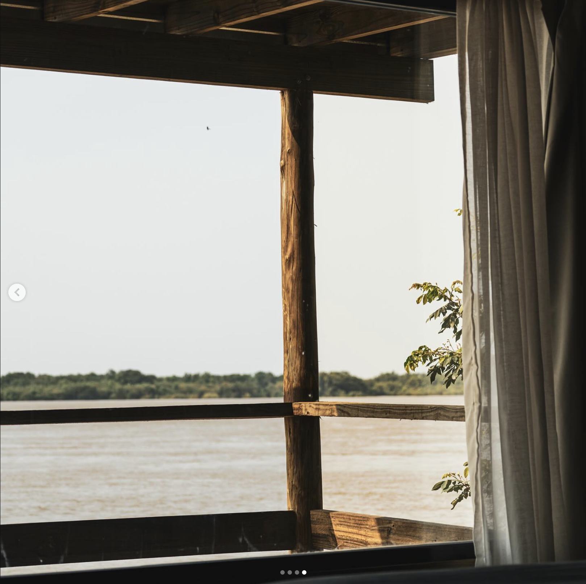

Climate-led architecture
A single-day snapshot from Tuesday 15 October reveals occupancy rhythms, equipment schedules and their direct impact on internal temperature.
Six occupants share the office with a fridge running continuously and computers active during work hours — two often left on overnight for simulations. Lighting relies on two manually switched circuits of 58W fluorescent tubes, typically activated around 3 PM, though recent construction nearby has pushed that earlier.
Form driven by climate
Multiple scenarios — from curtain use to double glazing — were tested to quantify each intervention's effect on summer cooling and winter comfort.
Increased ventilation proved most effective for cooling; improved window performance best addressed winter conditions. Window infiltration remains the primary source of thermal discomfort and fluctuation.
| Roof U-value | 0.24 W/m²K |
| Windows U-value | 5.7 W/m²K |
| External wall U-value | 1.43 W/m²K |
| Infiltration rate | 0.5 ac/h |
| Fresh air | 30 m³/person hr |
| Vent. for cooling | S = 3 / W = 0 ac/h |
| Occupancy | 263 W (6 × 117 W for 9h) |
| Fridge | 100 W (1 × 100 W for 24h) |
| Computers | 900 W (6 × 400 W for 9h) |
| Lights | 121 W (10 × 58 W for 5h) |
| Incident solar | S = 1.25 / W = 0.3 kWh/m² per day (80% transmitted) |
| Outdoor temp. | S = 18.8 / W = 7 °C |
Territory as framework


Landscape informs architecture
Total embodied carbon is estimated at 840 kg CO₂e/m² — driven primarily by services and the superstructure, with windows and finishes splitting the remainder.
Services (HVAC, electrical, plumbing) lead at 207 kg CO₂e/m². The concrete core and steel-frame superstructure follow, while aluminium-framed double glazing accounts for 133 kg CO₂e/m². Internal finishes contribute 179 kg CO₂e/m²; walls and roof remain modest.
Structure in motion
Form follows landscape
Design from site logic


Place-driven design
